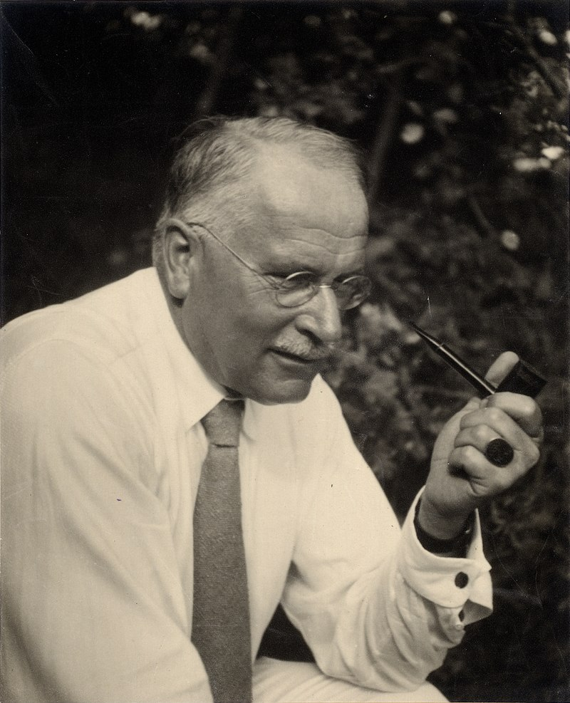
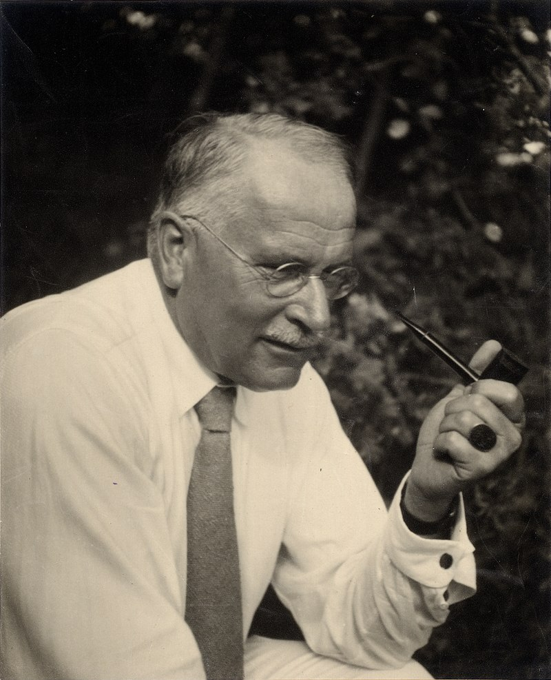
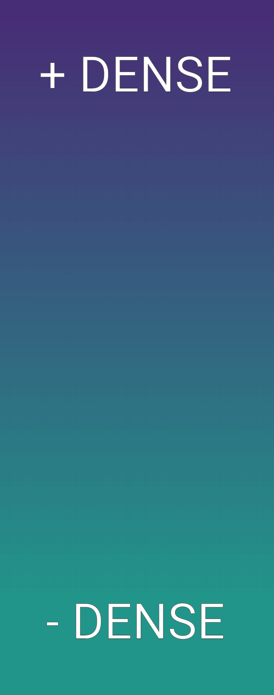

IN-BETWEEN
PLEIN / VIDE

間
Walls with windows and doors form the house,
though the space within them
is the essence of the house.


 


This volume [...] would still embrace an equal measure of vacancy,
and would coincide with a portion of "space" and "vacuity" equal to itself.
ARISTOTLE
Space is not something objective and real, nor a substance,
nor an accident, nor a relation; instead, it is subjective and ideal [...]
IMMANUEL KANT
Nothingness, like being, itself is sheer emptiness and lack of determinacy,
and so is itself nothing but indeterminate be-ing.
GEORG HEGEL
It would be wiser to [...] seek the Void when we
need rest, than to run after outer distraction.
CARL JUNG
Time and space are modes by which we think
and not conditions in which we live.
ALBERT EINSTEIN

● ○ ○ ○ ○

○ ● ○ ○ ○


○ ○ ● ○ ○


○ ○ ○ ● ○

○ ○ ○ ○ ●
FULL:
32.5%
BUILT
VOID:
15.1%
PARK
FALLOW
SQUARE


35.1%
BUILDING | OFFICE | STATION | PUBLIC BUILDING
BUILT

19.0%
ROAD | HIGHWAY | SERVICE ROAD | LIVING STREET
STREET

17.6%
FACTORY | MANUFACTURE | INDUSTRIAL AREA
INDUSTRIAL
9.2%
RAILWAY | PLATFORM | TRAMWAY
RAILS
6.8%
PARK | WOOD | GARDEN | GRASS | SAND
GREEN

4.2%
RETAIL | COMMERCIAL AREA | BUSINESS
COMMERCIAL

3.2%
CULTURAL CENTER | SOCIAL FACILITY | SCHOOL
COMMUNITY

2.9%
RIVER | CANAL | WETLAND
WATER

2.4%
ABANDONED | FALLOW | WASTELAND
BROWNFIELD

2.3%
PARKING

1.7%
CANAL TUNNEL
SENNE TUNNEL

1.0%
MARKETPLACE | PEDESTRIAN WAY | PLAZA
SQUARE

0.6%
PITCH | RUNNING TRACK | SPORTS CENTRE
SPORT

0.2%
JEWISH | CATHOLIC | MUSLIM | BUDDHIST
RELIGION
| BUILT | 35.1% |
| STREET | 19.0% |
| INDUSTRIAL | 17.6% |
| RAILS | 9.2% |
| GREEN | 6.8% |
| COMMERCIAL | 4.2% |
| COMMUNITY | 3.2% |
| WATER | 2.9% |
| BROWNFIELD | 2.4% |
| PARKING | 2.3% |
| SENNE TUNNEL | 1.7% |
| SQUARE | 1.0% |
| SPORT | 0.6% |
| RELIGION | 0.2% |


Aesthetic effects cover the general
perception of the water's surface.
This includes visual, sonic, tactile
and psychological effects.
This effect mediates a sense of belonging
[...] and opens up a new dimension.
water is an escape of sorts from
the physical world.
the aesthetic value of water
lies in its naturalness.
healing effect on psychological diagnoses
reduction of stress and cognitive fatigue,
normalisation of blood pressure and heart rate.
allows for an unconscious shift of attention


{kind=link}